Myth of the Pinpoint Stance¶
John Yandell¶
In the Myth of the Back Leg we exposed the myth that modern players step into the serve with the back foot. What our high speed footage showed was that virtually all good servers actually land on the front foot with the back leg kicking backwards in the opposite direction.
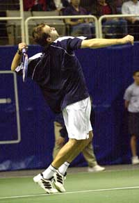
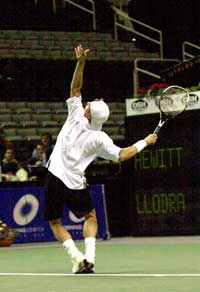
Does the Pinpoint Stance have any real advantage for servers such as Hewitt or Rusedski?
This pattern of leg action, which I call "the coil and the hop," results from the deep knee bend in the modern game. But what about players who use the so-called "Pinpoint Stance"?
In the Pinpoint Stance, players bring the back foot up underneath them before they push off the court. We can contrast this motion to the "Platform Stance" in which the back leg stays in position as the motion uncoils. This is the stance used, for example, by Sampras and Agassi.
Is the Pinpoint a way to get even more power into the serve? Doesn't it let you push off with both feet?
Interestingly, players who use the Pinpoint end up finishing the motion in exactly the same way as players using the Platform. After first bringing the back leg forward, they all end up kicking the back leg back away from them and landing in the court on the front foot.
So what's the benefit of bringing the back foot forward, if it ends up kicking it back the other way as the motion uncoils?
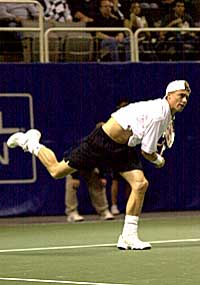
Players who use the Pinpoint Stance all land on the front foot with the rear leg kicking backwards.¶
[The theory is that by bringing the back foot up, players can actually push off with both legs, compared to the Platform where the push comes from the front leg only.]
[In theory using both legs increases the positive benefits of the deep knee bend by increasing the transfer of energy as the legs uncoil.]
This is a commonly held belief in some sectors of the coaching and teaching community. A recent high-tech book on stroke production declares that the Pinpoint Stance actually produces more vertical lift and a higher contact point as compared to the Platform Stance.
Well known pro players who use some version of the Pinpoint Stance include world number one Lleyton Hewitt, as well as two of the game's biggest servers, Mark Philippoussis and Greg Rusedski. Does that extra step really help their serves?
If we look closely at the high speed footage, I think the answer is definitely no. None of the players mentioned above gets any discernible push with the back leg.
The Pinpoint stance is at best irrelevant to the leg action in the modern serve and in some cases, it may actually be a negative factor, restricting the coiling action of the body, and impeding the transfer of energy into the shot. This appears to be the case in the motion of Mark Philippoussis as we shall see.
The Pinpoint is of course widely copied by junior and club players. Unfortunately the extra motion in the Pinpoint often ends up causing them all kinds of other technical problems. More than likely, if you are a player currently using the Pinpoint Stance, you can make an almost immediate improvement in the consistency and power of your serve by going to the simpler and more powerful Platform Stance.
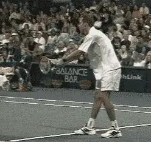
\ Is Rusedski getting any significant push by bringing the back foot forward?Evaluating the benefits of the two stances and the role of the legs in the serve is, however, a complex task. First, we can't point to examples of pro players going back and forth between the two stances so we can readily compare results.
Second, to date we have not been able to measure the amount of muscle contraction exerted at various points in the service motion, and this kind of quantitative data might settle the argument more clearly than even the high speed video.
Third, there are at least 3 different versions of the Pinpoint Stance. We'll see that Rusedski, Hewitt, and Philippoussis all do slightly different things with the back leg. Do these different motions have the same or different effects?
What are the similarities and what are the differences among Rusedski, Hewitt and Philippoussis?
Greg Rusedski¶
The big claim about the Pinpoint is that it allows players to push off with both legs, and to get greater vertical height. Greg Rusedski holds the speed record on the pro tour at 149 mph, and he uses the Pinpoint Stance.
Is the Pinpoint one reason why? Clearly in the case of Rusedski, no. The Pinpoint is not helping him generate additional height or a higher contact point.
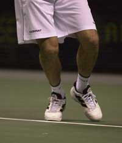
\ The ball of Rusedski's front foot is ready to push. But the back leg is literally on tiptoes.Advanced Tennis studies comparing Pete Sampras to Rusedski show that both players make contact at virtually identical heights - on average, 9' 5" above the court surface.
Rusedski, however, at 6' 4" is 3" taller than Pete! So there's no way the Pinpoint in and of itself could be giving him more lift. He actually appears to be losing rather than gaining height.
Why? Rusedski barely gets off the court surface at contact, while Pete is several inches in the air. Probably, this difference in contact has more to do with the knee bend than the Pinpoint Stance. Rusedski has the least knee bend of any of the top players and Pete has the most, or close to it.
If Rusedski had a deeper bend, he undoubtedly would get higher off the ground. But that would require a higher toss and a totally different tempo since his motion is very quick. But what about the role of the back leg? Even if he doesn't have as much knee bend, is Rusedski getting any significant push by bringing the back foot up into the Pinpoint? Check out the Advanced Tennis high speed video and I think you'll agree the answer is no.
Watch closely what happens to his legs. Rusedski begins his knee bend with the back leg still back. He only starts to bring the back leg up after his front leg reaches the deepest part of the bend. This turns out to be important.
Note that as Rusedski moves his back foot up and into the Pinpoint, he doesn't drag his foot along the court surface. Instead he picks the back foot up off the court and moves it forward in the air. When he does put it down into the Pinpoint Stance, he puts it down toes first.
At this point, Rusedski appears, literally, to be standing up on the tiptoes of his back leg. The ball of his back foot never makes contact with the court. At the time he leaves the court, his back foot is virtually straight up and down, or perpendicular to the court.
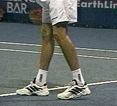
\ Click photo to study high speed video of Rusedski's Pinpoint Stance for yourself.Watch closely and see if you can actually see any significant "push" from the back foot from this position. The feet appear to leave the court at almost exactly the same time. But look at the difference in the angle of the feet to the court surface. The ball of Rusedski's front foot is on the court, and it's obvious that this is where the push is coming from.
Compare that with the "tiptoes" position of the back foot. The push with the back leg appears to minimal if not non-existent. In my opinion, Rusedski's back leg is actually passive. It's irrelevant to the real bio-mechanics of the motion or the generation of power. The back leg just doesn't appear to be pushing at all. Instead it is being pulled up and off the court by the forces generated by the uncoiling of front leg.
If you don't believe me, try this simple test. First stand in the serve ready position, drop into your knee bend position and push off as hard as you can into the air with both feet. You'll feel your heels leave the court first, and the push come from the balls of your feet. See how high you get in the air.
Now stand on your tiptoes and try the same thing. See how high you can get in the air that way. Which way do you get more push from the legs? (See if you can even get as far up on your toes as Rusedski, much less push off from that position.)
So in Rusedski's case, the role of the Pinpoint appears to be at best irrelevant.
Lleyton Hewitt¶
Now let's look at a second variation in the Pinpoint, the one used by Lleyton Hewitt. This motion is quite different from Rusedski's. But does he get any more benefit from the back leg?
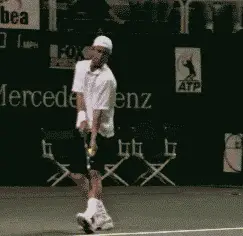
Like Rusedski, Hewitt appear to get no significant push from the back leg.
First, compared to Greg, there are three differences in Hewitt's version of the Pinpoint. Lleyton has a much deeper knee bend. Second he keeps his back foot in contact with the court as he moves it up into the Pinpoint Stance. Third, he puts the ball of the back foot down on the court, not just the toes. From this position, Hewitt certainly appears to be in a much better position to push off with the back leg than Rusedski. But again look closely at the action of the feet leaving the court.
Rusedski's feet seem to come off the court at the same time. But Hewitt's back foot definitely comes off the court first.
Note that his back foot is much flatter on the court at the deepest part of the knee bend than Greg. But, like Rusedski, Hewitt still comes up on the back toes before leaving the court. This is in contrast to Hewitt's front foot, which seems to roll off the court from the ball of the foot.
Despite the differences, at the critical moment he leaves the court, his back foot appears to be in a position very similar to Rusedski's. So again, the question is whether he can really push off with the back leg from the position.
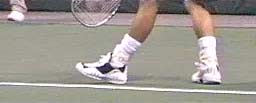
\ Click photo to study the leg action in Hewitt' serve in high speed video.Here's another important element to consider. Note that there is a slight delay between the time the back foot leaves the court and the time when the front foot follows. According to the video footage it's about 1/25 of a second. If Hewitt was really pushing off with the back foot, I don't think you would see this lag.
If both feet are on the court and one foot pushes off, the other foot should come off immediately. There's no way to push the body up in the air with one leg and hold it down at the same time with the other.
Again, you can demonstrate this for yourself. Start in the serve ready position and go to your knee bend. Now try to consciously push off the back foot first, and then, immediately afterwards, try to push off for a second time with the front foot.
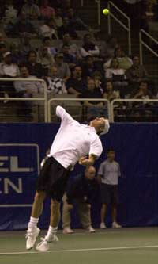
\ Hewitt's rear foot has already left the court, toes first, with his rear leg rotating forward. His front foot is doing the actual pushing from the ball of his foot.You can't do it! What you will find is that if you really push off with the back leg, you'll immediately leave the court.
Conceivably, you could push off from the balls of both feet at the same time-but that's not what Hewitt is actually doing.
Look at the Hewitt animation one more time, because there is a final clue to the passive role of the back foot. Watch how the back leg turns as it leaves the court. Notice that it is rotating forward, turning toward the net as his back foot leaves the ground.
If there were a strong push with the back leg, you wouldn't see this. Instead you'd see the back leg leave the ground without rotating. The force of the push would send the leg straight up at the same angle to the court. Instead, it is being pulled around and upward by the rotational forces from the torso before leaving the court.
Hewitt definitely has more vertical push than Rusedski, but this again appears to be a function of the deeper knee bend and the action of the front leg. At best, Hewitt's Pinpoint Stance, like Rusedski's, seems irrelevant to the core bio-mechanics of the motion.
Mark Philippoussis¶
This brings us to the third variation in the Pinpoint Stance, as exemplified by Mark Philippoussis.
You guessed it, when we look at Philippoussis, once again we see passive action in the rear leg. Like Hewitt, Philippoussis also brings the back foot up behind him, and has a deep knee bend and a great vertical push. But again, take a close look at the footage. It shows that the push is coming from the front leg.
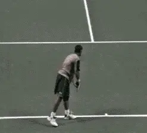
\ Like Hewitt, the rear leg action is passive in Philippoussis's motion.As with Hewitt, you see Phillippoussis come up on the back toes. This makes it difficult or impossible to push. And, like Hewitt, you also see the telltale rotation forward of the back leg as the torso rotates.
So Philippoussis isn't getting anything extra from the Pinpoint either. In fact, in his case he might actually be losing something.
It's possible that Philippoussis's version of the Pinpoint is actually having a negative impact by interfering with or reducing his body rotation.
Let's look at the relation between the Pinpoint and the body rotation in Philippoussis's serve and compare it to the rotation in the motion of Pete Sampras.
In some ways, their motions appear quite similar.
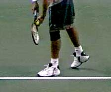
\ Click photo to see high speed video of how Phillipoussis uses the back foot.If you look at the position of Mark's feet as the motion starts, they are in a position similar to Pete's. Note that Mark starts with his rear or right foot well behind him, off the baseline and about 2 and � feet to his left.
This stance is similar to Sampras, although somewhat wider. Pete also has his back foot turned a bit further away from the baseline. However, both players are in position to turn much further than either Rusedksi or Hewitt.
And this in fact is what Sampras does. He rotates his torso onto the line of this stance, turning his back away from the net. As I have written (see Sampras Body Rotation), this allows Pete to rotate his body 120 degrees or more back into the motion, a technique first developed by the great John McEnroe (see the McEnroe serve).
But watch what happens to Mark. At the moment when he could be turning his torso further away from the baseline like Sampras, he is actually starting to bring his back foot forward into the Pinpoint. This step up with the back foot limits his rotation by narrowing the alignment of his stance at the critical moment.
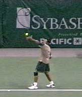
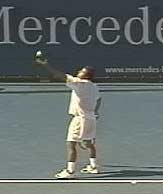
By bringing his back foot up into the Pinpoint, Philippoussis restricts his body turn in comparison to Sampras, despite their similar starting stances.¶
Philippoussis still has a good turn and significant rotation into the ball, but it's less than Sampras gets from a similar position with the feet. The difference of course is that Pete lets the back foot stay back. This allows him to turn further away from the net.
If Mark just left his back foot where it is at the start of the motion (or maybe narrowed his stance a bit and turned his back foot back just a bit), the same thing would probably happen automatically in his motion. And his serve would probably be even scarier than it already is.
So if the Pinpoint is irrelevant or even a negative, then why do so many good players use it? That's a fascinating question with no clear answer. Perhaps it's a hold over from the old days before the change in the rules that allowed the players to leave the court with both feet. (see Myth of the Back Foot).
I think it's also possible that the wide spread use of the Pinpoint motion in the modern game is due in part to the influence of two great Czech players who dominated the game in the 1980s: Martina Navratilova and Ivan Lendl. (Click here to study Lendl's serve in the Stroke Archive).
Both of them dragged their back foot up, and they were widely emulated by other players. Somehow after that it just became the thing to do.
From the first time I filmed Lendl in 1984, however, I thought this action was idiosyncratic and superfluous, and the same was true of Martina. Even though they both dragged the back foot up, they both also landed on the front foot with the back foot kicking back. I can't see any push coming from the back foot on Lendl's, can you?
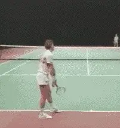
\ After Lendl, dragging the back foot up became the thing to do, whether it helped or not.Interestingly, I had the chance to film Martina at Indian Wells when she emerged from retirement this year to play doubles. To my surprise, she no longer drags the back foot up at all and uses a classic Platform Stance!
But when you watch a good server who uses the Pinpoint, the motion is so obvious and distinctive, that players and coaches often conclude that it somehow must also be important.
But not everything every pro player does is necessarily a bio-mechanical advantage or a good thing to copy. This is a meta-question that coaches need to address in studying pro players: what is core, what is incidental, and what is, possibly, counter-productive.
Interestingly, two of the biggest young servers in the game have recently abandoned the Pinpoint Stance, eliminating the step with the back foot and using the Platform. The two players? Andy Roddick and Taylor Dent. Neither one seems to have lost anything on their delivery. If anything, it's the opposite. Both are serving absolute rockets and going steadily upward in the rankings.
Let's be clear. Rusedski, Hewitt, and Phillippoussis all have great serves. And they would with either stance. Their other core mechanics are great, and they all have incredible natural ability-that's something you can't coach or compensate for with better mechanics. Maybe Philippoussis would serve 145mph or generate 4000 rpm of spin if he had as much turn as Sampras. Or maybe not. We'll probably never find out.
But what is also clear to me is that for the average player the Pinpoint is usually a negative factor, even a nightmare.
In the filming I've done of elite American juniors, I've seen a dozen nationally ranked kids who have copied the Pinpoint. Unfortunately, many of them have the tendency to exaggerate the motion, bringing the back foot up even further than the pro players we've looked at. In some cases it actually crosses in front of the front foot before they uncoil into the ball.
They may believe this is helping them get more leg action into the shot. But we've seen that's not true. But what's worse, it's causing them all kinds of rotational problems. It just doesn't look natural or smooth and you can see it bind up their motions and the release of energy into the shot.
I've seen many of these players make substantial improvements in their consistency and power by simplifying their footwork, giving up on the Pinpoint and learning the much simpler Platform Stance. I've seen the same thing with probably hundreds of players at all levels at our tennis school, and I'm virtually certain that the same will hold true for you too.
(In future articles, I'll also have more to say on this and the new Advanced Tennis quantitative three-dimensional work we did with a top college player that actually measured the negative effects of an extreme Pinpoint Stance in terms of his racquet head speed.)
My conclusion? The real leg action on the serve comes from the uncoiling of the front leg. The back leg is mostly along for the ride (except for the kick back motion as you leave the court). I've seen it in pro players, and I've proved it to myself and on my teaching court. Develop it, perfect it, and more than likely you'll serve much better as well.

John Yandell is widely acknowledged as one of the leading videographers and students of the modern game of professional tennis. His high speed filming for Advanced Tennis and TPA have provided new visual resources that have changed the way the game is studied and understood by both players and coaches. He has done personal video analysis for hundreds of high level competitive players, including Justine Henin-Hardenne, Taylor Dent and John McEnroe, among others.
In addition to his role as Editor of TPA he is the author of the critically acclaimed book Visual Tennis. The John Yandell Tennis School is located in San Francisco, California.